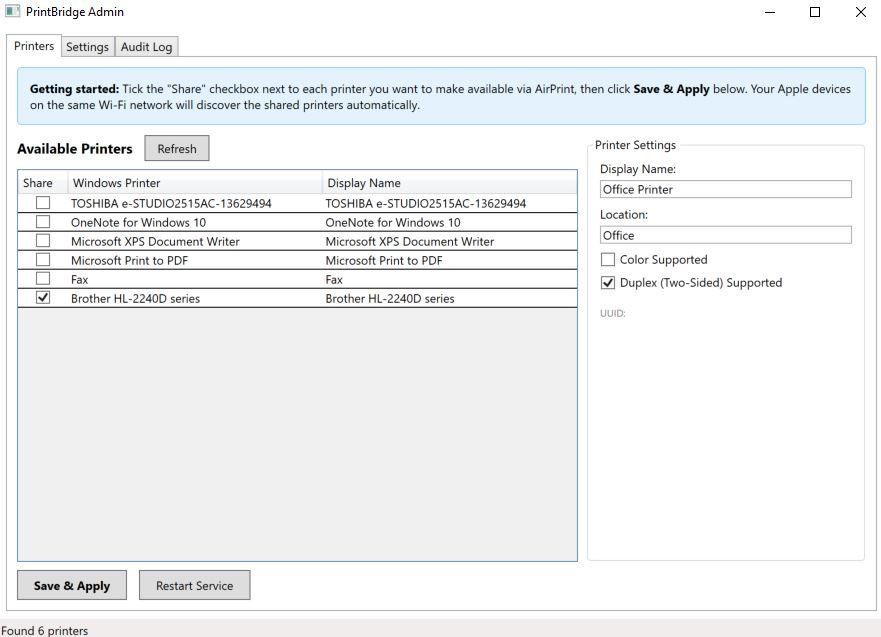
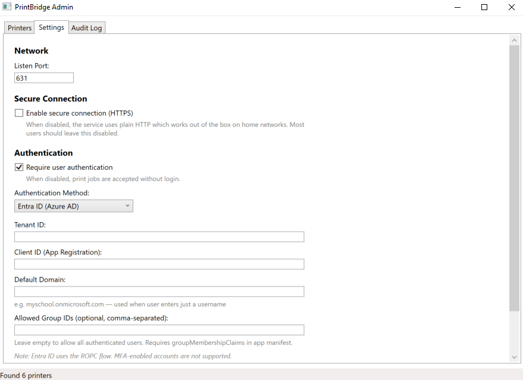
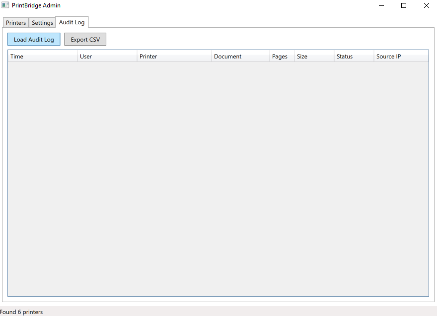

For Windows
Got an old printer without AirPrint? PrintBridge makes it wireless-ready. Print directly from your iPhone, iPad, or Mac to any Windows-connected printer — no extra hardware, no drivers to install on your Apple devices.
Requires Windows 10 or later. All Pro features included free during early access.
Open any app, tap Print, and your PrintBridge printers appear automatically. No apps to install on your Apple devices — it just works.
No configuration on your Apple devices. It just works.
Download and install PrintBridge on your Windows PC. It runs quietly as a background service.
Open the Admin panel, tick the printers you want to share, and click Save & Apply.
Pick up your iPhone or iPad, tap Print from any app, and your shared printers appear automatically.
A clean interface to manage your shared printers, authentication, and audit logs.



Built for homes, offices, and schools.
If Windows can print to it, PrintBridge can share it. Inkjet, laser, old, new — it doesn't matter.
Uses standard AirPrint discovery. Your iPhone and iPad find shared printers automatically — nothing to install.
Require users to log in before printing. Supports LDAP and Entra ID (Azure AD) for school and enterprise environments.
Track who printed what, when, and to which printer. Export logs to CSV for reporting and compliance.
Starts automatically with Windows. No need to stay logged in. Runs silently in the background.
Everything stays on your local network. No accounts to create, no subscriptions, no data sent anywhere.
Get the full Pro version at no cost while we're in early access. No credit card, no strings attached.
for a limited time
Download PrintBridge and start printing from your Apple devices in minutes.
Download PrintBridgeSystem requirements
Windows 10 or later (64-bit) • Any printer installed on Windows • Apple devices on the same Wi-Fi network
Note: Windows may show a SmartScreen warning because PrintBridge is new software. This is normal for any new app. Click More info → Run anyway to proceed with the installation.
We'd love to hear from you. Let us know how PrintBridge is working for you or what features you'd like to see.
Send Feedback